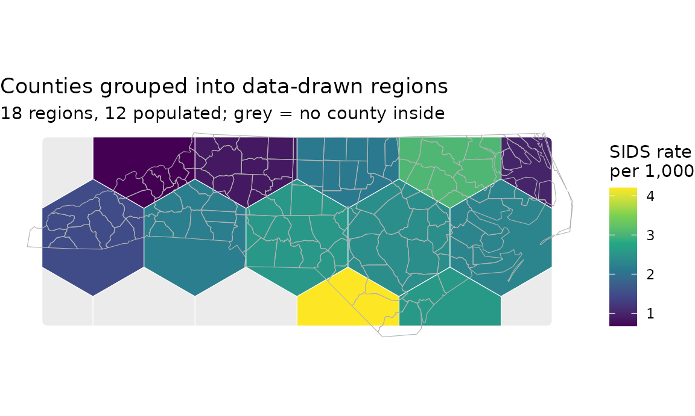

What to save, and what to report
Justin Chase
19 September 2026
Source:vignettes/reporting.Rmd
reporting.RmdThe other vignettes each take one decision: how many cells, which fold scheme, which diagnostic. This one starts after those are settled. You have regions and a validated model, and two things have to leave your session: the regions, in a form someone else can open and join to, and the numbers that say how far the map they are looking at can be trusted.
The regions as a file someone else can use
North Carolina’s counties, with the 1974 SIDS rate per thousand births, and twelve regions drawn from where the counties are rather than from the county boundaries themselves.
library(sf)
library(spatialkit)
nc <- st_read(system.file("shape/nc.shp", package = "sf"), quiet = TRUE)
counties <- ensure_projected(nc[, c("NAME", "BIR74", "SID74")])
counties$rate <- 1000 * counties$SID74 / counties$BIR74
centres <- coerce_to_points(counties)
boundary <- clip_target_for(centres, expand = 0.01)
regions <- build_tessellation(centres, method = "hex", approx_n_cells = 12,
boundary = boundary)$cells
nrow(regions)## [1] 18approx_n_cells is approximate, as its name says:
hexagons over this bounding box came out at 18 for a request of 12, and
some of them will hold no counties at all.
Grouping a layer you already have
assign_features_to_polygons() is usually shown on
points, but it takes polygons too. largest = TRUE gives
each county to the region it overlaps most, which is what makes the
result a grouping: one row per county, never a county split across two
rows.
grouped <- assign_features_to_polygons(counties, regions,
polygon_id_col = "cell_id",
largest = TRUE)
c(counties_in = nrow(counties), rows_out = nrow(grouped),
regions_used = length(unique(stats::na.omit(grouped$cell_id))))## counties_in rows_out regions_used
## 100 100 12## [1] 2 13100 counties in, 100 rows out, spread over 12 of the 18 regions, from
2 to 13 counties each. That row-count equality is the property to check
after any grouping: sf::st_join() would have duplicated
every county that touches two regions, and the counts per region would
then be wrong by however many counties straddle a border.
summarize_by_cell() reduces the grouped layer to one row
per region, and passing cells_sf keeps the geometry and the
empty regions:
cells <- summarize_by_cell(grouped, response_var = "rate", id_col = "cell_id",
cells_sf = regions, conf_level = 0.95)
names(cells)## [1] "cell_id" "n" "resp_mean_rate"
## [4] "..sd_resp_rate" "..se_resp_rate" "..neff_resp_rate"
## [7] "..df_resp_rate" "..ci_lo_resp_rate" "..ci_hi_resp_rate"
## [10] "cell_weight" "geometry"## [1] 66 of the 18 regions are empty, carrying NA rather than
being silently dropped. A region with no data in it is a fact about the
map, and one worth keeping: it is where the model has nothing to stand
on.
library(ggplot2)
ggplot() +
geom_sf(data = cells, aes(fill = resp_mean_rate), colour = "white") +
geom_sf(data = counties, fill = NA, colour = "grey70", linewidth = 0.2) +
scale_fill_viridis_c(name = "SIDS rate\nper 1,000", na.value = "grey92") +
labs(title = "Counties grouped into data-drawn regions",
subtitle = sprintf("%d regions, %d populated; grey = no county inside",
nrow(cells), sum(!is.na(cells$n)))) +
theme_void()
Is this location inside?
The question the regions get asked most often once they leave your
session is whether some new location falls in one. That is the same
function with keep_unassigned = TRUE, which returns one row
per location and NA for anything outside every region.
sites <- st_as_sf(
data.frame(site = c("Raleigh", "Wilmington", "Atlantic", "Norfolk VA"),
lon = c(-78.64, -77.95, -74.50, -76.29),
lat = c( 35.78, 34.23, 35.00, 36.85)),
coords = c("lon", "lat"), crs = 4326)
inside <- assign_features_to_polygons(st_transform(sites, st_crs(regions)),
regions, polygon_id_col = "cell_id",
keep_unassigned = TRUE)
st_drop_geometry(inside)## site cell_id
## 1 Raleigh 13
## 2 Wilmington 14
## 3 Atlantic NA
## 4 Norfolk VA NA2 of the 4 sit inside a region. The default is
keep_unassigned = FALSE, which drops them instead; that is
the right default when you are aggregating, and the wrong one when you
are answering a membership question, because a dropped row looks like a
location you never asked about.
Two details decide whether the answer is meaningful. The locations
have to be in the regions’ CRS, which is why st_transform()
is there: the regions are in whatever projection
ensure_projected() chose, and lon/lat degrees compared
against metres will put everything outside. And a point on a shared
border falls in both cells, so tie_break decides which one
it is recorded in; see ?assign_features_to_polygons for the
rules.
IDs that survive a reprojection
A region’s cell_id is its position in the layer, so it
changes if the layer is re-sorted. ensure_stable_poly_id()
derives an ID from the geometry itself, in a common CRS, so the same
region keeps the same ID however the file has been handled on the way to
whoever opens it.
regions$src <- seq_len(nrow(regions))
from_projected <- ensure_stable_poly_id(regions[, "src"])
from_lonlat <- ensure_stable_poly_id(st_transform(regions[, "src"], 4326))
identical(from_projected$poly_id[order(from_projected$src)],
from_lonlat$poly_id[order(from_lonlat$src)])## [1] TRUEUse that column, not the row position, as the key anything downstream joins on.
Writing it out
The regions are an ordinary sf layer, so
sf::st_write() handles them. The format matters more than
it looks:
dir <- tempfile(); dir.create(dir)
st_write(cells, file.path(dir, "regions.gpkg"), quiet = TRUE)
gpkg <- st_read(file.path(dir, "regions.gpkg"), quiet = TRUE)
suppressWarnings(st_write(cells, file.path(dir, "regions.shp"), quiet = TRUE))
shp <- st_read(file.path(dir, "regions.shp"), quiet = TRUE)
attr_names <- function(x) setdiff(names(x), attr(x, "sf_column"))
kept <- function(x) length(intersect(attr_names(x), attr_names(cells)))
c(columns = length(attr_names(cells)),
GeoPackage = kept(gpkg), Shapefile = kept(shp))## columns GeoPackage Shapefile
## 10 10 2## [1] "cell_id" "n" "rsp_mn_" "X__sd_r_" "X__s_rs_" "X__nff__"
## [7] "X__df_r_" "X__c_l__" "X__c_h__" "cll_wgh"A shapefile field name is capped at ten characters, so the standard
errors and confidence bounds arrive as X__s_rs_ and
X__c_l__: of the 10 columns
summarize_by_cell() produced, 2 survive the trip.
GeoPackage keeps every one of them, and renames only the geometry
column, which is a GeoPackage convention. Write a GeoPackage unless
something downstream can only read shapefiles, and if it can only read
shapefiles, rename the columns yourself first so you choose the
abbreviations.
The numbers the run already recorded
Nothing below is recomputed for the report. Each of these is written
into the object at the time the decision was made, which is the point: a
report assembled from $params and $info
describes the run that happened rather than a reconstruction of it.
The counties carry a real response, but a weak one, so the rest of this vignette runs on a simulated field over the same county centres, with a known correlation length of 120 km:
set.seed(42)
xy <- st_coordinates(centres)
D <- as.matrix(dist(xy))
field <- as.numeric(t(chol(exp(-D / 120e3) + diag(1e-8, nrow(D)))) %*%
rnorm(nrow(D)))
pts <- centres
pts$elev <- rnorm(nrow(pts))
pts$z <- 0.8 * pts$elev + 2 * field + rnorm(nrow(pts), sd = 0.3)
# A learner with no optional dependencies: a linear trend surface in the
# coordinates, plus the one covariate.
trend_fit <- function(train_sf, ...) {
d <- st_drop_geometry(train_sf)
co <- st_coordinates(train_sf)
d$x <- co[, 1]; d$y <- co[, 2]
new_spatial_fit(subclass = "trend_fit",
engine = stats::lm(z ~ elev + x + y, data = d),
formula = z ~ elev + x + y, response_var = "z",
predictor_vars = "elev", data_sf = train_sf)
}
predict.trend_fit <- function(object, newdata = NULL, ...) {
if (is.null(newdata)) return(stats::fitted(object$engine))
d <- st_drop_geometry(newdata)
co <- st_coordinates(newdata)
d$x <- co[, 1]; d$y <- co[, 2]
as.numeric(stats::predict(object$engine, newdata = d))
}
residuals.trend_fit <- function(object, ...) stats::residuals(object$engine)
fitted.trend_fit <- function(object, ...) stats::fitted(object$engine)
for (.g in c("predict", "residuals", "fitted"))
registerS3method(.g, "trend_fit", get(paste0(.g, ".trend_fit")))
folds <- make_folds(pts, k = 5, method = "block_kfold", block_size = 100e3,
seed = 1)
cv <- cv_spatial(pts, "z", "elev", trend_fit, folds = folds)
fit <- trend_fit(pts)A worked report
Six items. Every one is read out of an object the run already produced.
m <- function(x) format(round(as.numeric(x)), big.mark = ",", scientific = FALSE)
report <- list(
folds = sprintf("%s, k = %d, %d x %d blocks of %s m (%s)",
folds$method, folds$k, folds$params$grid_nx,
folds$params$grid_ny, m(folds$params$block_size),
folds$params$crs),
score = sprintf("RMSE %.2f (per fold %.2f to %.2f), R2 %.3f",
cv$overall$RMSE, min(cv$fold_metrics$RMSE),
max(cv$fold_metrics$RMSE), cv$overall$R2),
coverage = sprintf("%d of %d folds scored, %d rows dropped, %d orphan, %d unknown id",
cv$n_folds_succeeded, cv$n_folds_attempted, cv$n_dropped,
length(cv$orphan_rows), cv$n_unknown_ids)
)
mi <- residual_morans_i(fit)
report$residuals <- sprintf("Moran's I %.3f (z = %.1f, p = %.3g, %s null)",
mi$observed, mi$z, mi$p_value, mi$null)
surface <- predict_surface(fit, n_cells = 1500, covariates = pts,
boundary = counties)
aoa <- area_of_applicability(surface, model = fit, folds = folds)
report$applicability <- sprintf("%d of %d prediction cells outside (DI > %.3f)",
aoa$n_outside, aoa$n_new, aoa$threshold)
sac <- estimate_sac_range(pts, "z")
report$range <- sprintf("estimated range %s m against blocks of %s m",
m(sac), m(folds$params$block_size))## - folds: block_kfold, k = 5, 7 x 2 blocks of 100,000 m (+proj=aea +lat_1=34.333391 +lat_2=36.138461 +lat_0=35.559467 +lon_0=-79.400417 +datum=WGS84 +units=m +no_defs)
## - score: RMSE 2.25 (per fold 1.97 to 2.61), R2 -0.063
## - coverage: 5 of 5 folds scored, 0 rows dropped, 0 orphan, 0 unknown id
## - residuals: Moran's I 0.567 (z = 12.6, p = 3.62e-36, randomisation null)
## - applicability: 0 of 909 prediction cells outside (DI > 0.073)
## - range: estimated range 286,804 m against blocks of 100,000 mRead together, those lines say the run failed its own checks, which is what a report is for.
The blocks are 100,000 m across and the correlation reaches about
286,804 m, so training and test data sit inside one correlation length
of each other. The score is still optimistic, and the fix is blocks at
least as wide as the range, or auto_range = TRUE to size
them from it.
The cross-validated R2 of -0.063 is below zero, which says the trend
surface predicts held-out blocks worse than their own mean does, and
Moran’s I of 0.57 on the residuals (z = 12.6) says why: most of the
structure in z is the field, and a plane in the coordinates
cannot represent it. That is the point at which you fit something
spatial rather than report this.
The applicability line reads 0 of 909 here because
predict_surface() joined the covariate from the nearest
observation, so no grid cell holds a combination the model never saw. On
a real covariate raster it will not be zero;
vignette("diagnostics") works through what to do when it is
not.
What each line is for
| Report | From | Because |
|---|---|---|
| The fold scheme, the block size and the estimated range, in named CRS units | folds$params |
A cross-validation score means nothing without the geometry that produced it: blocks below the range leak, and the score comes back flattering (Roberts et al. 2017) |
| The metric with its per-fold spread, not the pooled value alone |
cv$fold_metrics, plot_cv_metrics()
|
0.9 in four folds and 14 in one is a model that fails in one region, and the pooled number cannot tell that from uniform mediocrity |
| Residual Moran’s I with its null | residual_morans_i() |
It is the check on whether the spatial structure the model was built for actually got modelled |
| The share of the prediction area outside the area of applicability | area_of_applicability() |
A fitted model returns a number everywhere, including ground nothing like its training data, and the CV score does not apply there (Meyer and Pebesma 2021) |
| Interval coverage, for a model with intervals |
cv_bayes(), plot_calibration()
|
Good point predictions routinely come with badly calibrated intervals, so RMSE alone can prefer the model whose uncertainty is wrong (Heaton et al. 2019) |
| Rows dropped, folds that failed, orphan and unknown IDs |
cv$n_dropped, cv$orphan_rows,
cv$fold_status
|
A score computed over 80 percent of the data is not a score over the data, and nothing else in the output says so |
Two of the six are about what the number does not cover, which is the part that gets left out. The area of applicability bounds the map in space and the dropped-row counts bound it in sample: without them a reader has a figure and no idea what it was computed over.
For the aggregates themselves, report the standard error that comes
with each cell mean rather than the mean alone.
summarize_by_cell() computes it with the observation count
beside it, and deff corrects it for within-cell
autocorrelation. A cell mean from two observations and one from thirteen
are different claims, and printed side by side they look identical.
## Min. 1st Qu. Median Mean 3rd Qu. Max.
## 2.000 5.750 9.500 8.333 11.000 13.000
range(populated$..se_resp_rate, na.rm = TRUE)## [1] 0.1616037 0.6601569What to save
Enough to rerun it, which is less than it sounds:
- the seed (
folds$params$seed) and the fold assignment (folds$assignment), - the regions, with
ensure_stable_poly_id()applied, as a GeoPackage, -
folds$paramsand the fit’s$info, which hold every decision made for you, - the session’s package versions.
The regions are the one output that cannot be regenerated from the
others without care. get_voronoi_seeds() and the k-means
sweep in determine_optimal_levels() are seeded, so they
repeat, but only at the same seed and the same package version. Save the
layer.
Next
vignette("getting-started") is the shortest path through
the pipeline that produced all of this.
vignette("diagnostics") covers the residual and
applicability checks the table asks you to report, and
vignette("spatial-cross-validation") covers fold geometry
and how to read a CV result down to the last row.
References
Heaton, M. J., Datta, A., Finley, A. O., et al. (2019). A case study competition among methods for analyzing large spatial data. Journal of Agricultural, Biological and Environmental Statistics 24, 398-425. https://doi.org/10.1007/s13253-018-00348-w
Meyer, H. and Pebesma, E. (2021). Predicting into unknown space? Estimating the area of applicability of spatial prediction models. Methods in Ecology and Evolution 12(9), 1620-1633. https://doi.org/10.1111/2041-210X.13650
Roberts, D. R., Bahn, V., Ciuti, S., et al. (2017). Cross-validation strategies for data with temporal, spatial, hierarchical, or phylogenetic structure. Ecography 40(8), 913-929. https://doi.org/10.1111/ecog.02881
## R version 4.6.1 (2026-06-24)
## Platform: x86_64-pc-linux-gnu
## Running under: Ubuntu 24.04.5 LTS
##
## Matrix products: default
## BLAS: /usr/lib/x86_64-linux-gnu/openblas-pthread/libblas.so.3
## LAPACK: /usr/lib/x86_64-linux-gnu/openblas-pthread/libopenblasp-r0.3.26.so; LAPACK version 3.12.0
##
## locale:
## [1] LC_CTYPE=C.UTF-8 LC_NUMERIC=C LC_TIME=C.UTF-8
## [4] LC_COLLATE=C.UTF-8 LC_MONETARY=C.UTF-8 LC_MESSAGES=C.UTF-8
## [7] LC_PAPER=C.UTF-8 LC_NAME=C LC_ADDRESS=C
## [10] LC_TELEPHONE=C LC_MEASUREMENT=C.UTF-8 LC_IDENTIFICATION=C
##
## time zone: UTC
## tzcode source: system (glibc)
##
## attached base packages:
## [1] stats graphics grDevices utils datasets methods base
##
## other attached packages:
## [1] ggplot2_4.0.3 spatialkit_2.0.0.9000 sf_1.1-3
##
## loaded via a namespace (and not attached):
## [1] s2_1.1.12 sass_0.4.10 generics_0.1.4 class_7.3-23
## [5] KernSmooth_2.23-26 lattice_0.22-9 digest_0.6.39 magrittr_2.0.5
## [9] evaluate_1.0.5 grid_4.6.1 RColorBrewer_1.1-3 fastmap_1.2.0
## [13] Matrix_1.7-5 jsonlite_2.0.0 e1071_1.7-17 DBI_1.3.0
## [17] viridisLite_0.4.3 scales_1.4.0 textshaping_1.0.5 jquerylib_0.1.4
## [21] cli_3.6.6 rlang_1.3.0 units_1.0-1 intervals_0.15.5
## [25] withr_3.0.3 cachem_1.1.0 yaml_2.3.12 otel_0.2.0
## [29] FNN_1.1.4.1 tools_4.6.1 dplyr_1.2.1 spacetime_1.3-4
## [33] logger_0.4.3 vctrs_0.7.3 R6_2.6.1 zoo_1.9-0
## [37] proxy_0.4-29 lifecycle_1.0.5 classInt_0.4-11 fs_2.1.0
## [41] htmlwidgets_1.6.4 ragg_1.5.2 pkgconfig_2.0.3 desc_1.4.3
## [45] pkgdown_2.2.1 pillar_1.11.1 bslib_0.12.0 gtable_0.3.6
## [49] Rcpp_1.1.2 glue_1.8.1 gstat_2.1-6 systemfonts_1.3.2
## [53] xfun_0.61 tibble_3.3.1 tidyselect_1.2.1 knitr_1.52
## [57] farver_2.1.2 htmltools_0.5.9 labeling_0.4.3 rmarkdown_2.32
## [61] xts_0.14.3 wk_0.9.5 compiler_4.6.1 S7_0.2.2
## [65] sp_2.2-3